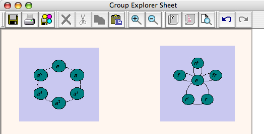
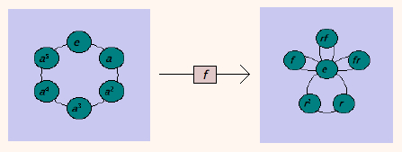
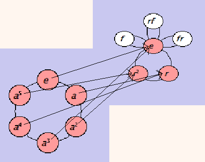
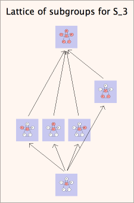
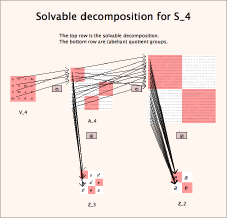

Let's take a quick look at a major new feature in version 2.0, the concept of a sheet. A big limitation of Group Explorer 1.5.8 (and earlier) was that it could not compare groups in any way; you could only look at one group at a time. Now in GE2.0, since we have all groups loaded simultaneously, we can take advantage of this by putting them together in a "sheet."
Continue reading below for a quick introduction to what sheets offer. To skip to the details of the sheet interface and how to use it, click here. I begin here with "Making your own sheets," but you can jump down to "Getting Group Explorer to make sheets for you," below, where the really fancy stuff shows up.
Let's take a look at two groups of the same order, Z6 and S3. I open a sheet (click New from the main window) and select Insert Visualizer from the Sheet menu. I choose Z6 and "Cycle graph" from the menus and a new Cycle graph shows up on my sheet. I drag it to the upper left a bit, and my sheet looks like the one shown here.
from the main window) and select Insert Visualizer from the Sheet menu. I choose Z6 and "Cycle graph" from the menus and a new Cycle graph shows up on my sheet. I drag it to the upper left a bit, and my sheet looks like the one shown here.

But that's just one visualizer, we want to have at least two. So let's repeat the same steps for dropping in a cycle graph for S3, and move it a little to the right of the first one, like this. (I resized each visualizer to be a bit smaller--just select one, then click and drag its corner.)

Now let's start comparing these visualizers. In group theory, the means of examining relationships between groups is via homomorphisms. So let's create one in this sheet. From the Sheet menu, I choose "Insert homomorphism," and I choose its name (I'll let it be called f, the default). Then I click the left visualizer, and then the right one, to signify that the homomorphism should flow in that direction. An arrow appears as shown here.

So far this isn't very informative, but if we double-click the homomorphism we can do all sorts of interesting things. For instance, you can decide what elements from Z6 should correspond to what elements from S3. Furthermore, Group Explorer will not let you mess this up (you cannot define a non-homomorphism.)
The map defaults to the zero map (all elements map to the identity, in this case e) but you can change it, of course. I will map a to r and then choose multiple arrows from the Display tab, to create a very useful visualization of one way to embed Z6 in S3, shown below.

The arrows require some attention to follow carefully, but you can see how the six-element circle marches around the little three-element circle twice. I've taken the liberty of highlighting Z6 red and its image in S3 red also. (Double-click the visualizers and play with the subsets as documented here.)
This is only the beginning of the potential of sheets. The next section really shows them off.
The help documents and group info windows of Group Explorer are full of links that create sheets. For many common computations, it is very interesting to be able to see the result of the computation visually. I will whet your appetite for such illustrations by giving a few examples here, and providing links for you to browse further yourself.
| To see a short exact sequence exhibiting the normality of a subgroup (and the quotient group it computes), try the "tell me more" link next to "Subgroups" in the Computations section of the group info window. Then find the subgroup in question on the list, and follow the link provided. The illustration on the right shows the normality of V4 in A4. |  |
| To see a lattice of subgroups for a given group, also go to the "tell me more" link next to "Subgroups" in the group info window, and follow the link provided at the top of the page. The illustration on the right shows all subgroups of S3. |  |
| To see the solvable decomposition of any solvable group, follow the "tell me more" link next to "Solvable" in the group info window. The illustration on the right shows the solvable decomposition for S4. |  |
Quick help links:
Contents | Getting Started | Tutorials | User Manual | Miscellaneous Reference
GE terminology | Help on help